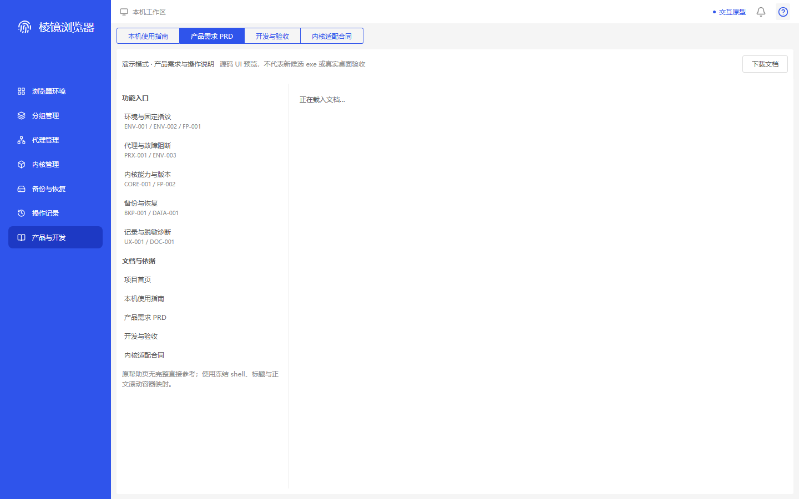
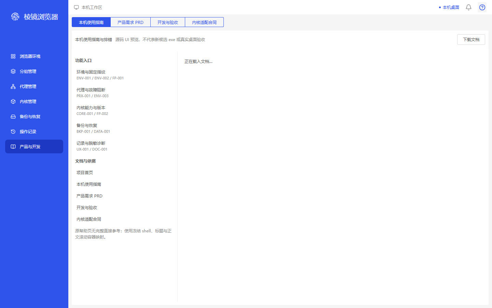
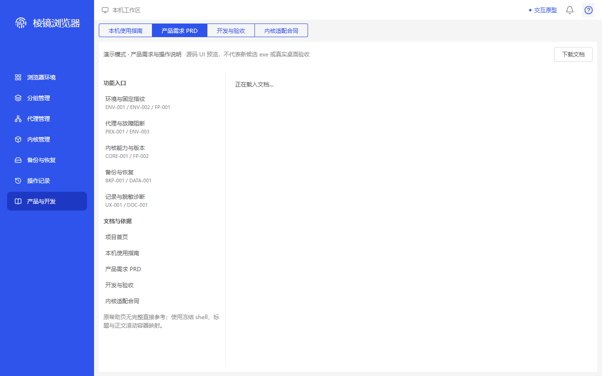
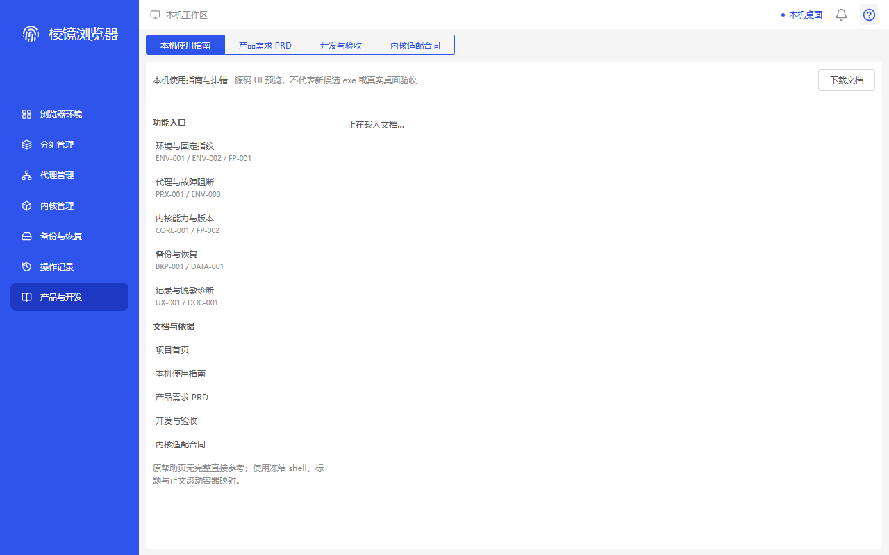

四张真实首次 lazy fallback；原请求释放后同面板正文恢复另作合同复核。完整同版本原指南仍缺。新精确缓存字节审查不更改旧构造器拒绝 getter、历史失败或正式4/21。 不是同业务1:1或真实桌面验收。
help-cold-demo-first-loading · 1440×900
ADAPTED — PRD selected; genuine loading text, demo/source-preview caveat and left reference caveat visible. Original settings image supports CONTAINER mapping only. MISSING_DIRECT_HELP; no strict visual PASS or whole-H19 closure; saved b424 only.

96f5e45131ba5dcc656f1371aad5e13a4aab34ab063987aa034794fa0f38ceb7
help-cold-native-first-loading · 1440×900
ADAPTED — Local guide selected; genuine loading text, native-local badge and both caveats visible. Synthetic browser bridge only, not desktop acceptance. Original settings image is CONTAINER-only. MISSING_DIRECT_HELP; no strict visual PASS or whole-H19 closure; saved b424 only.

34fd664be28a3a89ff81f93d7e95f1808674b640b7a137c1218340513fa76430
help-cold-demo-first-loading · 1280×800
ADAPTED — PRD selected; genuine loading text and toolbar caveat visible; left reference caveat wraps to two readable lines without clipping. Original settings image is CONTAINER-only. MISSING_DIRECT_HELP; no strict visual PASS or whole-H19 closure; saved b424 only.

9d0a0fa4292d64715ce272f2a20939866b8399d79ad6569037a466e36b384be9
help-cold-native-first-loading · 1280×800
ADAPTED — Local guide selected; genuine loading text, native-local badge and both readable caveats visible at the smaller viewport. Synthetic browser bridge only. Original settings image is CONTAINER-only. MISSING_DIRECT_HELP; no strict visual PASS or whole-H19 closure; saved b424 only.

194614294e0308435bddd4a2b44c33df93e984b99bacb1f3f4d1f91070f31e54